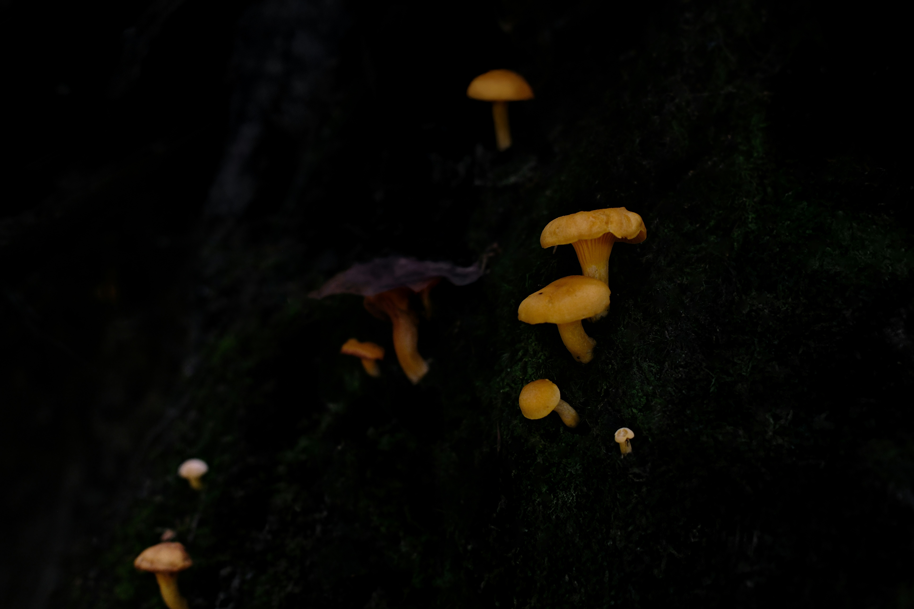
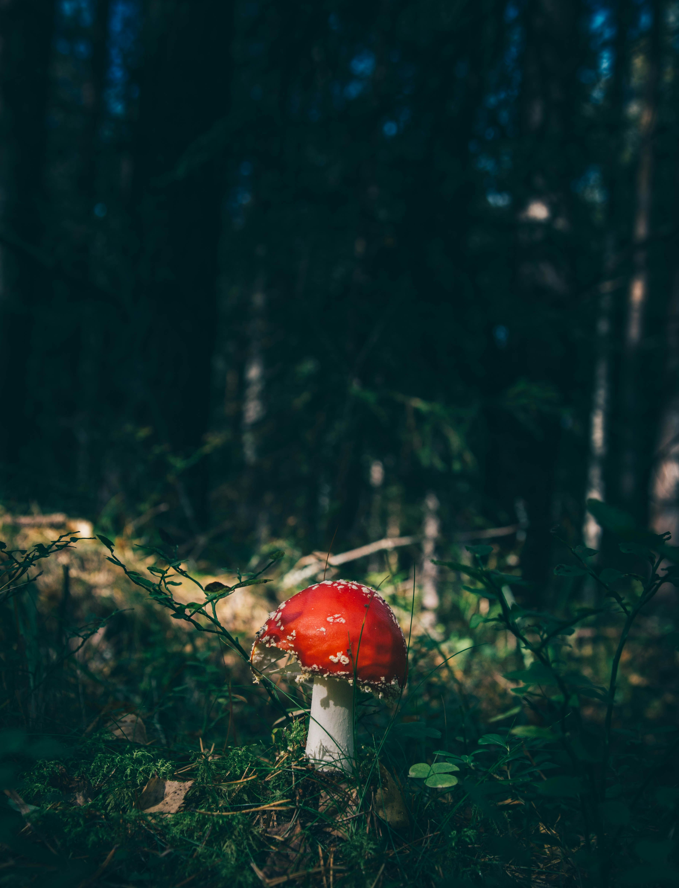

Edible Species
Safe to Forage
These species are safe when correctly identified. Always verify with an expert before consumption.

Edible
Chanterelle
Golden, funnel-shaped. Fruity, peppery aroma. Blunt forked ridges rather than true gills. Found under oaks. Season: Aug–Nov.

Edible
Oyster Mushroom
Fan-shaped, pale grey to cream. White gills running down the stem. Mild, velvety flavour. Found on dead wood year-round.

Edible
Porcini (Cep)
Brown cap, white spongy pores beneath. Rich nutty flavour. Found in pine and oak forests at higher elevations.

Edible
Lion's Mane
White, cascading icicle-like spines. Seafood-like texture when cooked. Also prized for cognitive health benefits of health.